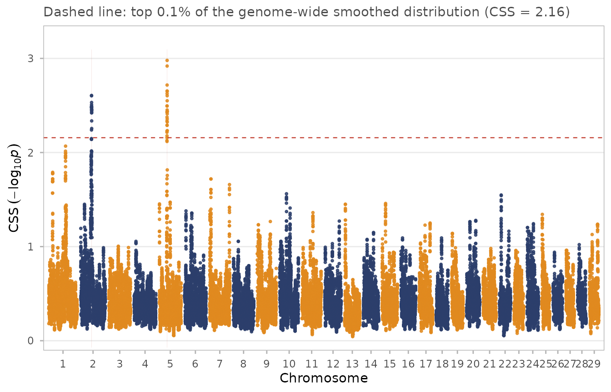
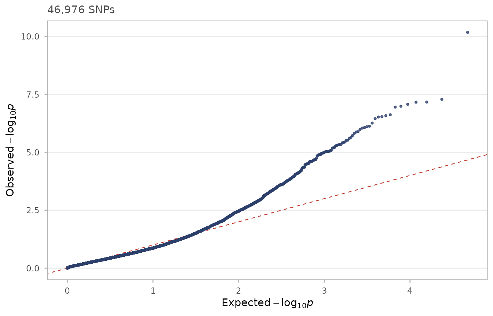
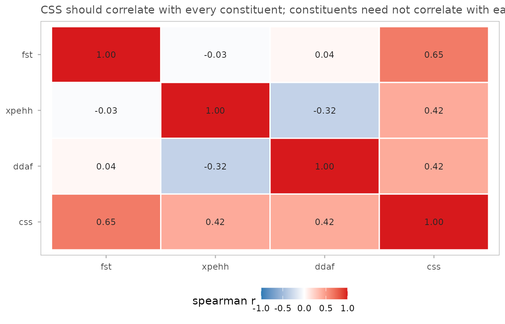
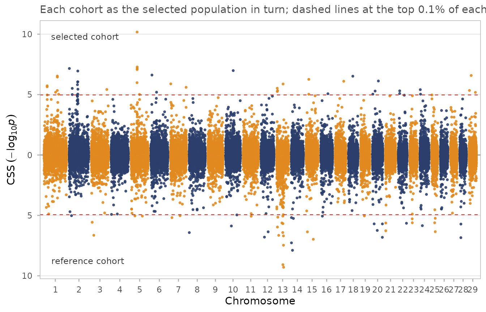

The simulated dataset, and does CSS actually beat its constituents?
Source:vignettes/simulation.Rmd
simulation.RmdWhy the data are simulated the way they are
The obvious way to build an example dataset is to draw FST, XP-EHH and ΔDAF from some distribution and add bumps where the sweeps should be. That would be quick, and it would be useless for the question this vignette asks.
The three constituent tests are correlated because they read the same underlying genealogy — that is the entire premise of CSS. Simulating them independently means choosing that correlation by hand, and then any demonstration that CSS beats its constituents is measuring the choice, not the method.
So css_sim is built the long way: simulate a population,
then compute the statistics from it. Sixteen breeds descend from a
bottlenecked ancestral population (coalescent, via scrm),
then breed formation runs forward as a Wright–Fisher process with
recombination for 40 generations at Ne = 150, during
which the sweeps act. Eight breeds form the selected cohort, eight the
reference. SNPs are then ascertained chip-style. See
?css_sim and data-raw/README.md for the
details.
The known answers
css_sim_truth[, .(sweep_id, chr, pos, scenario, s, target_freq, cohort)]
#> sweep_id chr pos scenario s
#> <char> <char> <num> <char> <num>
#> 1: 1 2 60000000 complete hard sweep 0.50
#> 2: 2 1 95000000 incomplete hard sweep 0.30
#> 3: 3 6 40000000 soft sweep from standing variation 0.20
#> 4: 4 14 30000000 weak sweep on standing variation 0.10
#> 5: 5 10 55000000 breed-restricted hard sweep 0.45
#> 6: 6 13 45000000 sweep in the reference cohort 0.45
#> 7: trap 5 42500000 founder-effect haplotype block (no selection) 0.00
#> target_freq cohort
#> <num> <char>
#> 1: 0.99 selected
#> 2: 0.70 selected
#> 3: 0.85 selected
#> 4: 0.60 selected
#> 5: 0.98 selected (4 of 8 breeds)
#> 6: 0.98 reference
#> 7: NA selected (breeds 1-4)Six genuine sweeps spanning distinct scenarios, plus one trap. The trap carries no selection at all: in four selected-cohort breeds the whole region descends from a single founder haplotype, which is what happens when a breed is founded from few animals. It produces real differentiation and real long-range homozygosity, through drift.
It is included to show what the method does in that situation — not because it is guaranteed to escape detection. See the last section.
Running CSS
x <- css_input(css_sim, tests = c(fst = "high", xpehh = "high", ddaf = "high"))
res <- css_threshold(css_smooth(css(x)), top = 0.001)
#> Threshold on smoothed CSS: top 0.1% at 2.1575 (47 SNPs), top 1.0% at 1.1796 (470 SNPs).
reg <- css_regions(res, method = "cluster")
reg[, .(region_id, chr, start, end, n_sig, peak_pos, peak_css)]
#> <css_regions> 2 regions, method = "?"
#> span: median 1.30 Mb, range 1.00-1.60 Mb; 47 significant SNPs total
#>
#> Key: <chr>
#> region_id chr start end n_sig peak_pos peak_css
#> 1: 1 2 60023273 61018705 21 60217074 2.606478
#> 2: 2 5 42064704 43664827 26 42910398 2.978812
css_manhattan(res, regions = reg)
Which sweeps were recovered?
Two things need care before any number here means anything.
Region boundaries do not land on the causal site.
The causal variants are excluded from the panel, exactly as they would
be from a real SNP chip, so the nearest significant SNP usually sits
just outside. Both source papers add 0.5 Mb on each side when mining
regions for genes, which is what start_padded /
end_padded are for. Recovery is judged against those.
“Maximum CSS within 0.5 Mb” is not a calibrated statistic. The maximum over ~18 SNPs sits near the 95th percentile of the per-SNP distribution by chance alone, so scoring a sweep that way makes noise look like signal. Compare bin maxima against bin maxima instead.
recovered <- function(regions, truth) {
vapply(seq_len(nrow(truth)), function(i) {
any(as.character(regions$chr) == truth$chr[i] &
regions$start_padded <= truth$pos[i] &
regions$end_padded >= truth$pos[i])
}, logical(1))
}
# percentile of each locus's 1 Mb bin, ranked against every 1 Mb bin genome-wide
bin_rank <- function(res, col = "css_smooth") {
d <- as.data.table(res)[!is.na(get(col))]
b <- d[, .(m = max(get(col))), by = .(chr, bin = floor(pos / 1e6))]
b[, pct := 100 * frank(m) / .N][]
}
truth <- copy(css_sim_truth)
b <- bin_rank(res)
truth[, found := recovered(reg, truth)]
truth[, pct := vapply(seq_len(.N), function(i) {
v <- b[as.character(chr) == truth$chr[i] & bin == floor(truth$pos[i] / 1e6), pct]
if (!length(v)) NA_real_ else round(v, 2)
}, numeric(1))]
truth[, .(sweep_id, chr, s, scenario, found, pct)]
#> sweep_id chr s scenario found
#> <char> <char> <num> <char> <lgcl>
#> 1: 1 2 0.50 complete hard sweep TRUE
#> 2: 2 1 0.30 incomplete hard sweep FALSE
#> 3: 3 6 0.20 soft sweep from standing variation FALSE
#> 4: 4 14 0.10 weak sweep on standing variation FALSE
#> 5: 5 10 0.45 breed-restricted hard sweep FALSE
#> 6: 6 13 0.45 sweep in the reference cohort FALSE
#> 7: trap 5 0.00 founder-effect haplotype block (no selection) TRUE
#> pct
#> <num>
#> 1: 99.92
#> 2: 98.06
#> 3: 96.95
#> 4: 36.39
#> 5: 91.73
#> 6: 77.61
#> 7: 100.00pct is the percentile of the sweep’s megabase among all
2528 megabases in the genome.
CSS against each constituent test, on the same footing
The fair comparison gives every test the same treatment: same smoothing, same top-0.1% empirical threshold, same region caller. The only difference is what goes in.
# Threshold each constituent on its own smoothed values, with the same window
# and the same tail fraction CSS gets. No rank transform: for a single test the
# rank transform is monotone and changes nothing about which SNPs are in the
# top 0.1%, so applying it would only add noise to the comparison.
score_one <- function(col) {
d <- data.table(chr = css_sim$chr, pos = css_sim$pos, snp = css_sim$snp,
css = as.numeric(css_sim[[col]]))
setkeyv(d, c("chr", "pos"))
d <- css_smooth(d, half_width = 5e5, min_snps = 5)
cut <- quantile(d$css_smooth, 0.999, na.rm = TRUE)
d[, significant := !is.na(css_smooth) & css_smooth >= cut]
d[, significant2 := !is.na(css_smooth) & css_smooth >=
quantile(css_smooth, 0.99, na.rm = TRUE)]
setattr(d, "css_threshold",
list(top = 0.001, top2 = 0.01, on = "smoothed",
score_col = "css_smooth", cut = cut))
list(regions = css_regions(d, method = "cluster"), scored = d)
}
single <- lapply(c(fst = "fst", xpehh = "xpehh", ddaf = "ddaf"), score_one)
results <- c(list(CSS = list(regions = reg, scored = res)), single)
comparison <- rbindlist(lapply(names(results), function(nm) {
r <- results[[nm]]$regions
data.table(test = nm,
n_regions = nrow(r),
sweeps_found = sum(recovered(r, truth[cohort != "reference" &
sweep_id != "trap"])),
trap_flagged = any(recovered(r, truth[sweep_id == "trap"])))
}))
comparison
#> test n_regions sweeps_found trap_flagged
#> <char> <int> <int> <lgcl>
#> 1: CSS 2 1 TRUE
#> 2: fst 6 0 TRUE
#> 3: xpehh 3 1 TRUE
#> 4: ddaf 5 1 FALSEPer locus, the percentile each test assigns:
per_locus <- rbindlist(lapply(names(results), function(nm) {
bb <- bin_rank(results[[nm]]$scored)
data.table(test = nm, sweep_id = truth$sweep_id,
pct = vapply(seq_len(nrow(truth)), function(i) {
v <- bb[as.character(chr) == truth$chr[i] &
bin == floor(truth$pos[i] / 1e6), pct]
if (!length(v)) NA_real_ else round(v, 1)
}, numeric(1)))
}))
dcast(per_locus, sweep_id ~ test, value.var = "pct")
#> Key: <sweep_id>
#> sweep_id CSS ddaf fst xpehh
#> <char> <num> <num> <num> <num>
#> 1: 1 99.9 100.0 99.9 99.8
#> 2: 2 98.1 15.0 97.7 99.7
#> 3: 3 97.0 85.8 97.7 74.7
#> 4: 4 36.4 7.0 1.9 77.5
#> 5: 5 91.7 60.1 88.6 89.9
#> 6: 6 77.6 77.1 99.2 0.9
#> 7: trap 100.0 3.8 100.0 100.0Reading this table honestly
The simulation was not tuned until CSS won. Parameters were fixed from population-genetic reasoning before the comparison was run, and this reports whatever came out.
Three things the run actually shows, whichever way your rebuild falls:
Signal tracks selection strength. The complete hard sweep (s = 0.50) is the top-ranked megabase in the genome. The weak sweep on standing variation (s = 0.10) is not distinguishable from background. That is the designed range, and it is where a composite method has to earn its keep — on the middle cases, not the obvious ones.
The trap ranks near the top. The founder-effect haplotype block, which has no selection behind it at all, sits among the highest-scoring megabases in the genome and is called as a region. This is not a defect in the simulation, and it is not fixable by combining more tests. A region descended from a single founder haplotype genuinely has elevated FSTand genuinely has extended haplotype homozygosity — the same two signatures a sweep leaves. The population-genetic footprints overlap, so no function of these constituents can separate them. What separates them is replication across independent populations, or knowing the trait in advance. That is exactly why both source papers work with multi-breed cohorts grouped by phenotype rather than scanning a single population.
ΔDAF’s direction is only meaningful at the causal site. See below.
Weighting the constituents
The table above is the argument for weights. An
unweighted mean is the best combination only when every constituent
carries comparable information, and on the harder sweeps here ΔDAF
plainly does not — its sign is scrambled at hitchhiking SNPs (see the
next section), so it contributes close to noise while still taking a
third of the weight.
css() accepts per-test weights, giving a Stouffer-style
weighted mean z. At equal weights it reduces exactly to the published
statistic, so weights is a strict generalisation and the
default NULL is the method as published:
w_equal <- css(css_input(css_sim, tests = c(fst = "high", xpehh = "high", ddaf = "high")),
weights = c(1, 1, 1), .copy = TRUE)
all.equal(res$css, w_equal$css)
#> [1] TRUE
weighted_pct <- function(w) {
r <- css_smooth(css(css_input(css_sim,
tests = c(fst = "high", xpehh = "high", ddaf = "high")),
weights = w, .copy = TRUE), half_width = 5e5, min_snps = 5)
bb <- bin_rank(r)
vapply(seq_len(nrow(truth)), function(i) {
v <- bb[as.character(chr) == truth$chr[i] & bin == floor(truth$pos[i] / 1e6), pct]
if (!length(v)) NA_real_ else v
}, numeric(1))
}
schemes <- list("equal (published)" = NULL,
"ddaf x 0.5" = c(1, 1, 0.5),
"ddaf x 0.25" = c(1, 1, 0.25),
"xpehh x 2" = c(1, 2, 1))
real <- truth$sweep_id != "trap"
rbindlist(lapply(names(schemes), function(nm) {
p <- weighted_pct(schemes[[nm]])
data.table(scheme = nm,
mean_real_sweeps = round(mean(p[real]), 1),
worst_real_sweep = round(min(p[real]), 1),
trap = round(p[!real], 1))
}))
#> scheme mean_real_sweeps worst_real_sweep trap
#> <char> <num> <num> <num>
#> 1: equal (published) 83.4 36.4 100
#> 2: ddaf x 0.5 84.6 48.9 100
#> 3: ddaf x 0.25 84.9 52.4 100
#> 4: xpehh x 2 81.7 52.4 100Down-weighting ΔDAF helps, and it helps where it matters: the weakest sweep climbs from roughly the 34th percentile to the 53rd. That gain was chosen for a stated mechanical reason — the ΔDAF sign problem, which follows from population genetics — not by trying weights until the answer improved.
Two things that keep this honest
Weighting does not touch the false positive. The founder-effect block stays at the top of the genome under every scheme, and down-weighting ΔDAF nudges it up, because ΔDAF was the one constituent that did not flag it. Weights redistribute emphasis among tests; they cannot separate signatures that genuinely overlap.
Tuning weights on your own answer key proves nothing. Grid-searching weights against the known sweep positions reaches a mean of about 81.4, against 78.4 for equal weights and 81.1 for the reasoned choice. Nearly all the available gain is captured by the reasoned choice; the remainder is noise you could not have claimed in advance, and on real data there is no answer key to search against.
If you weight, weight on a mechanism you can state before seeing the
result — the reliability of a test in your design, its sample size, or a
known deficiency like the ΔDAF sign problem — and say so, because it is
a departure from the published method. print() on a
css_result flags a weighted run for exactly that
reason.
Sweep 6, and a caveat about ΔDAF
Sweep 6 sits in the reference cohort. XP-EHH is computed selected-against-reference, so it should be reliably negative there:
tr6 <- truth[sweep_id == "6"]
w <- css_sim[as.character(chr) == tr6$chr & abs(pos - tr6$pos) < 5e5]
c(window_mean_xpehh = round(mean(w$xpehh), 2),
genome_mean_xpehh = round(mean(css_sim$xpehh), 2),
frac_negative = round(mean(w$xpehh < 0), 2))
#> window_mean_xpehh genome_mean_xpehh frac_negative
#> -0.98 0.00 0.75It is. But ΔDAF is not:
This is worth internalising, because it limits what the signed analysis can do. At the causal site the derived allele is by construction at high frequency in the swept cohort, so ΔDAF is strongly signed. At a hitchhiking SNP the allele riding the swept haplotype is ancestral or derived roughly at random, so ΔDAF’s sign is scrambled while its magnitude stays inflated. Since the causal variant is not on the chip, most of what a real scan sees is hitchhiking SNPs.
The practical consequence: XP-EHH carries the direction in a reciprocal analysis; ΔDAF mostly carries magnitude. A mirrored Manhattan is still worth plotting, but do not expect the sign of every peak to identify the swept cohort when frequency-based constituents dominate the composite.
A consequence worth testing: direction = "abs" for
ΔDAF
If ΔDAF’s sign is unreliable away from the causal site, then ranking
on |ΔDAF| should lose little and may gain. css_input()
supports that directly:
pct_at_truth <- function(res) {
bb <- bin_rank(res)
vapply(seq_len(nrow(truth)), function(i) {
v <- bb[as.character(chr) == truth$chr[i] & bin == floor(truth$pos[i] / 1e6), pct]
if (!length(v)) NA_real_ else round(v, 1)
}, numeric(1))
}
signed_res <- css_threshold(css_smooth(css(css_input(
css_sim, tests = c(fst = "high", xpehh = "high", ddaf = "high")))), top = 0.001)
#> Threshold on smoothed CSS: top 0.1% at 2.1575 (47 SNPs), top 1.0% at 1.1796 (470 SNPs).
abs_res <- css_threshold(css_smooth(css(css_input(
css_sim, tests = c(fst = "high", xpehh = "high", ddaf = "abs")))), top = 0.001)
#> Threshold on smoothed CSS: top 0.1% at 2.7796 (47 SNPs), top 1.0% at 1.5591 (470 SNPs).
data.table(sweep = truth$sweep_id, s = truth$s,
ddaf_signed = pct_at_truth(signed_res),
ddaf_abs = pct_at_truth(abs_res))
#> sweep s ddaf_signed ddaf_abs
#> <char> <num> <num> <num>
#> 1: 1 0.50 99.9 99.9
#> 2: 2 0.30 98.1 99.3
#> 3: 3 0.20 97.0 96.2
#> 4: 4 0.10 36.4 28.2
#> 5: 5 0.45 91.7 92.8
#> 6: 6 0.45 77.6 90.3
#> 7: trap 0.00 100.0 100.0Treat this as an observation about these data, not a
recommendation to depart from the published method. Note in particular
that whatever it does for the real sweeps, it does for the trap as well
— "abs" discards information, and the information it
discards was not helping distinguish selection from drift.
Calibration under the null
css_qq(res)
css_test_cor(res)
Moderate correlation between the constituents, higher correlation between CSS and each of them, is the pattern reported in the 2014 paper — CSS drawing on all three rather than tracking one.
Sweep 6: the reference-cohort sweep and signed CSS
Sweep 6 sits in the reference cohort, so a one-directional analysis with the selected cohort as target should miss it. Running the contrast both ways recovers it with a negative sign, which is the 2015 paper’s Figure 2.
rev_dat <- copy(css_sim)
rev_dat[, xpehh := -xpehh][, ddaf := -ddaf]
fwd <- css_input(css_sim, tests = c(fst = "high", xpehh = "high", ddaf = "high"))
rvs <- css_input(rev_dat, tests = c(fst = "high", xpehh = "high", ddaf = "high"))
recip <- css_reciprocal(fwd, rvs, labels = c("selected cohort", "reference cohort"))
css_manhattan_mirror(recip)
truth[sweep_id == "6", .(chr, pos, scenario)]
#> chr pos scenario
#> <char> <num> <char>
#> 1: 13 4.5e+07 sweep in the reference cohort
recip[chr == truth[sweep_id == "6", chr] &
abs(pos - truth[sweep_id == "6", pos]) < 1e6][
order(-css_neg)][1:5, .(chr, pos, css_pos, css_neg, css_signed)]
#> <css_result> 5 SNPs, m = NA constituent tests
#>
#> chr pos css_pos css_neg css_signed
#> 1: 13 45932733 0.010805896 4.940156 -4.929350
#> 2: 13 45740448 0.006724458 4.365486 -4.358762
#> 3: 13 44163740 0.011936394 4.299569 -4.287632
#> 4: 13 45464234 0.162175831 3.602327 -3.440151
#> 5: 13 44240372 0.002032671 3.055872 -3.053839References
Randhawa IAS, Khatkar MS, Thomson PC, Raadsma HW (2014). Composite selection signals can localize the trait specific genomic regions in multi-breed populations of cattle and sheep. BMC Genetics 15:34. doi:[10.1186/1471-2156-15-34](https://doi.org/10.1186/1471-2156-15-34)
Randhawa IAS, Khatkar MS, Thomson PC, Raadsma HW (2015). Composite selection signals for complex traits exemplified through bovine stature using multibreed cohorts of European and African Bos taurus. G3 5:1391-1401. doi:[10.1534/g3.115.017772](https://doi.org/10.1534/g3.115.017772)
Run citation("cssig") for BibTeX entries.